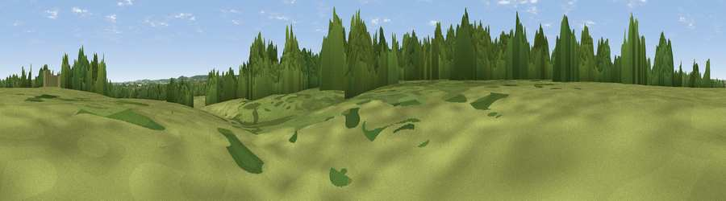

Judd's Hill
#37047 in England · top 67% of its area beats it · near OspringeThe view, rendered

A 360° render of this exact spot computed from the terrain model, tree cover and land cover — summer colours, afternoon light, calibrated against photographs of famous viewpoints. Real trees, hedges and buildings will differ in detail.
The panorama
Grey silhouette: terrain skyline in each direction (720 bearings, Earth curvature and refraction included). Dashed green: skyline with trees (+15 m) and buildings (+8 m) as obstacles. Blue strip: how far the ground is visible on each bearing.
Where the view opens
Wedge length = distance to the farthest visible ground on that bearing (vegetation-aware). Rings at 10, 25 and 50 km.
What fills the view
45% woodland · 31% grassland · 17% cropland · 4% built-up · 2% water
Angular shares of the visible panorama (visual magnitude), not map area. Landscape diversity 0.55 (0–1 Shannon).
Key numbers
More beautiful places nearby
The staircase of upgrades: each row has a higher view potential than everything closer. Driving times are estimates from straight-line distance, calibrated against real road routing — check an actual route before setting out.
| Place | Direction | Drive | Score |
|---|---|---|---|
| Viewpoint near Ospringe | NNW · 1 km | ~3 min | 48.7 |
| The Mount (Popsy's View) | SE · 8 km | ~16 min | 61.7 |
| Viewpoint near Charing | SSW · 11 km | ~21 min | 68.6 |
| Viewpoint near Westwell | S · 12 km | ~23 min | 72.2 |
| Viewpoint near Lympne | SSE · 28 km | ~44 min | 72.6 |
| Tolsford Hill | SE · 28 km | ~44 min | 77.9 |
| Viewpoint near Capel-le-Ferne | SE · 34 km | ~51 min | 80.2 |
| Viewpoint near Willingdon | SW · 72 km | ~95 min | 83.4 |
51.30999, 0.85691 · source: osm peak · position refined by local search. Computed location — check access rights before visiting.